est situé sur l'axe
optique.
est situé sur l'axe
optique.
|
On dispose d'un banc d'optique, d'un objet lumineux
de hauteur 3,5 cm, d'une lentille convergente de
centre , de distance focale
, d'une lentille de centre , de
distance focale inconnue et d'un écran.
Le point objet est situé sur l'axe
optique.

La relation de conjugaison de Descartes permet de déterminer
la position de l'image de
par la lentille :
A.N. .
L'écran doit être placé
derrière la lentille .
Le grandissement est défini par :
Si la lentille est mince et convergente, on montre que
donc
L'image est renversée car le grandissement est négatif.
L'image est plus grande que l'objet car .
Si on utilise la définition du grandissement on obtient
A.N. .
L'image a pour dimension .
La relation de conjugaison permet d'écrire
A.N. .
L'image d'un objet
donnée par une lentille est renversée et deux fois plus
grande que l'objet. Les points et sont sur l'axe optique de la lentille, ils sont distants
de .
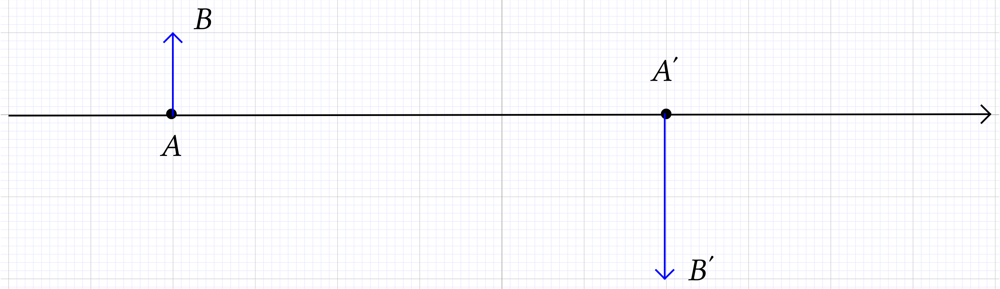
Pour placer la lentille, il faut se rappeler que le rayon issu de et qui passe par le centre optique de la lentille n'est pas dévié.
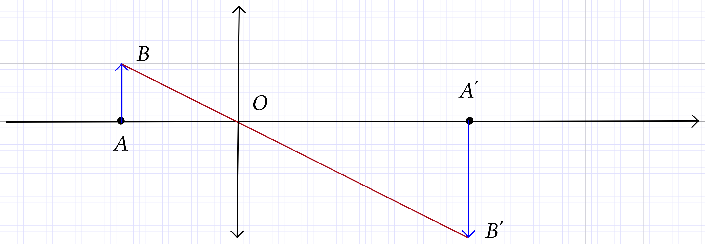
Réponse
Le rayon issu de parallèle à l'axe optique est dévié par la lentille de telle sorte qu'il passe par le point de l'axe optique appelé foyer image de la lentille (rayon sur la figure).
Le rayon issu de qui ressort de la lentille parallèle à l'axe optique est passé, en amont de la lentille par un point appelé foyer objet de la lentille (rayon sur la figure).
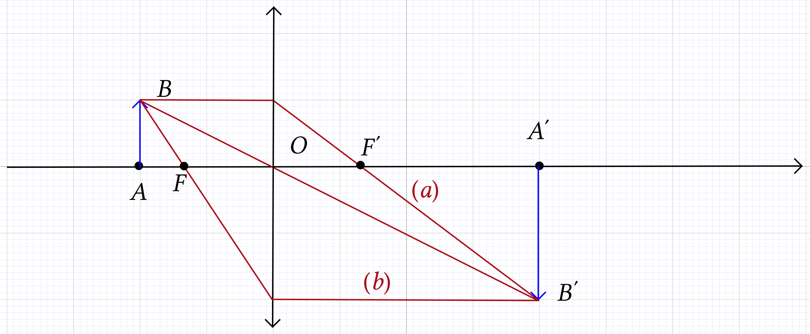
On détermine graphiquement que
Le grandissement vaut puisque l'image est deux fois plus grande que l'objet et qu'elle est renversée.
On a montré dans le cours que, dans le cadre du modèle des lentilles minces convergentes,
On détermine graphiquement que et . On retrouve donc bien un grandissement .
Pour réaliser une loupe on utilise une lentille mince convergente. La finalité d'une loupe est d'obtenir d'un objet une image plus grande et droite.
Si l'image est plus grande et droite, donc il est positif et sa valeur absolue est supérieure à 1.
l'objet se situe à une distance comprise entre et ;
l'objet se situe à une distance comprise entre le centre optique de la lentille et son foyer objet .
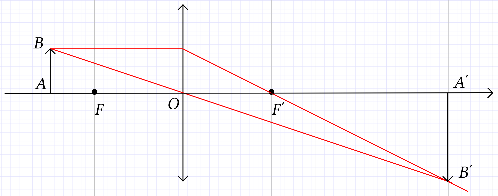
Lorsque l'objet est situé en amont de la lentille à une distance comprise entre et , l'image est renversée, plus grande que l'objet et située au-delà de après la lentille. Elle est réelle.
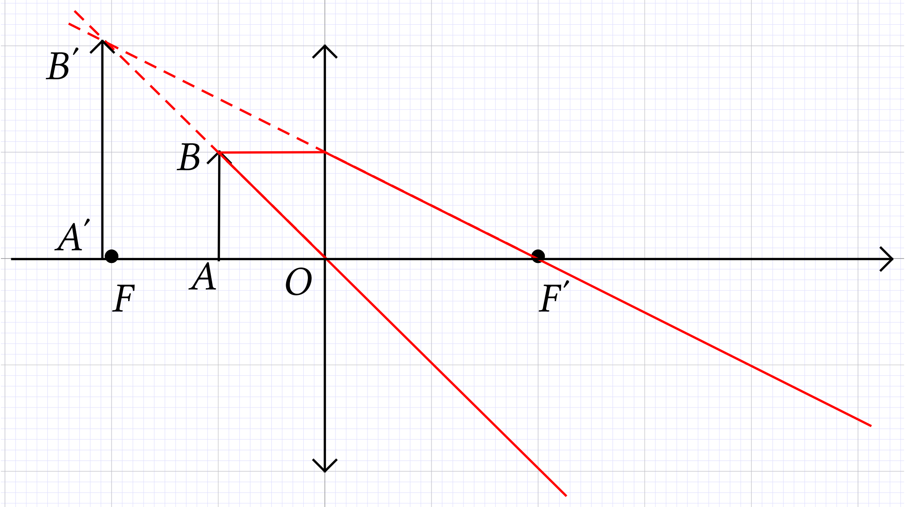
Lorsque l'objet est situé en amont de la lentille entre et , l'image est droite, plus grande que l'objet et située en amont de la lentille. Elle est virtuelle.
Pour pouvoir être utilisée en loupe, la lentille doit être placée de telle sorte que l'objet soit compris entre et .
On doit résoudre le système suivant :
Par substitution, on a, puisque ,
soit
A.N. et
La lentille est toujours utilisée en loupe. Un œil ne se fatigue pas lorsqu'il observe à l'infini.
Pour que l'image soit rejetée à l'infini, l'objet doit être placé dans le plan focal objet de la lentille.
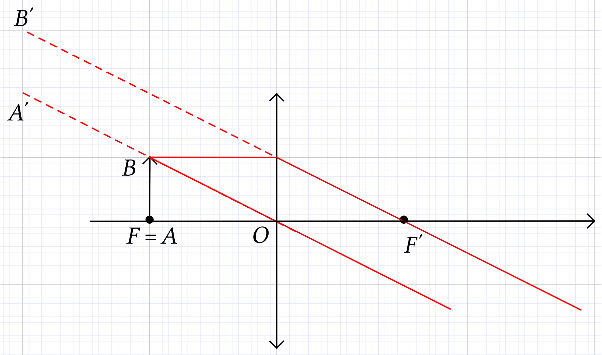
Sur certaines montres indiquant le jour du mois, on place devant ce nombre une lentille convergente afin de le grandir.
Cette lentille fonctionne en loupe ; elle forme une image droite, agradie, virtuelle qui grossit l'objet (ici un nombre).
Puisque l'observation ne réclame aucun effort à l'œil, on peut conclure que l'image donnée par la lentille se situe à l'infini et que l'objet, le nombre, est dans le plan focal objet. Finalement, .
Format : 16/9
Résolution : W-XGA 1280x768
Taille image : 0,75 m - 7,5 m
Luminosité : 110 ANSI Lumens
Niveau sonore : 25 dB (mode silencieux)/30 dB (mode normal)
Distance : 0,9 m à 10 m
Contraste: > 2500:1
Optique : Lentille de projection : 22 à 27 mm
Lampe : Durée de vie 4 000 heures
Le schéma ci-après représente de façon très simplifiée le principe d'un vidéo-projecteur. Une lampe éclaire une lentille convergente , jouant le rôle de condenseur, placée devant une plaque de cristaux liquides.
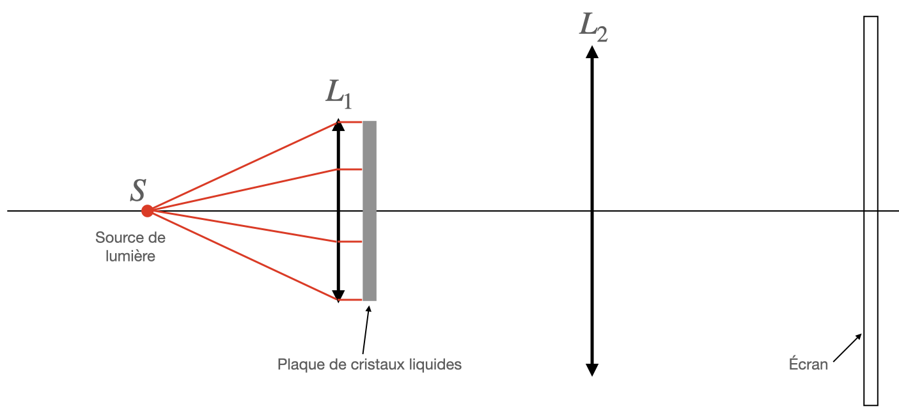
L'image formée sur la plaque représente l'objet pour la lentille de projection convergente. On visualise son image sur un écran.
On constate que les rayons issus de quittent la lentille parallèlement à l'axe optique. On peut donc en conclure que se trouve au foyer objet de la lentille .
Lorsqu'on utilise une lentille de projection de distance focale , la diagonale d'une image 16/9 a pour valeur pour une distance lentille-écran de .
On nous indique que . On peut donc déterminer la distance entre l'objet et la lentille à partir de la relation de conjugaison
A.N. .
La définition du grandissement est
Dans le cadre des lentilles minces convergentes, on a montré qu'on peut aussi exprimer le grandissement sous la forme
A.N. . L'image est donc 33,3 fois plus grande que l'objet (et renversée).
A.N. ;
 A.N.
.
A.N.
.
Si on note la diagonale, . Cette valeur est très proche de celle annoncée.
16/9 signifie que le rapport de la largeur de l'image sur sa hauteur est égal à 1,78.
, l'image est bien au format 16/9.
Lorsqu'on a peu de recul entre le vidéo-projecteur et
l'écran, on conseille l'utilisation d'un appareil à focale
courte. On sous-entend par focale courte, une distance focale de la lentille de projection petite.
Le
vidéo-projecteur décrit ci-dessus a une lentille dont la focale peut varier de à  (voir les
caractéristiques).
(voir les
caractéristiques).
On conserve les mêmes dimensions ; en particulier, la distance
 . On doit donc
résoudre le système
. On doit donc
résoudre le système
donc  et .
et .
A.N. . La racine qui a un sens physique est . On en déduit que et .
A.N. ;
A.N. .
Le conseil est justifié puisque l'image est bien plus grande.
Un appareil photographique comporte deux éléments essentiels : l'objectif et la pellicule.
On modélise :
l'objectif par une lentille mince convergente de centre optique ;
on note et les foyers principaux, respectivement objet et image, de cette lentille, dont la distance focale est :
la pellicule par un écran , où se forme l'image réelle de l'objet photographié.
L'objectif est conçu pour pouvoir déplacer la lentille par rapport à la pellicule.
Si l'objet est à l'infini, l'image se forme dans le plan focal image de l'objectif. On a donc .
Pour obtenir des images, sur l'écran , d'objets plus rapprochés de , il est nécessaire d'effectuer une mise au point, c'est-à-dire de faire varier la distance lentille-écran.
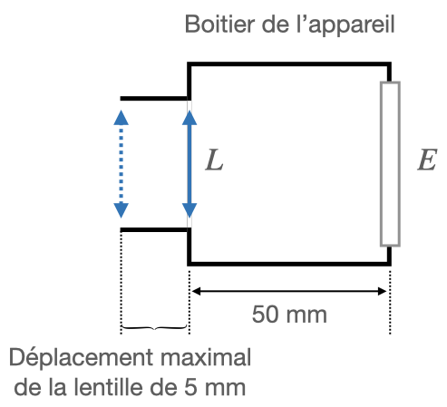
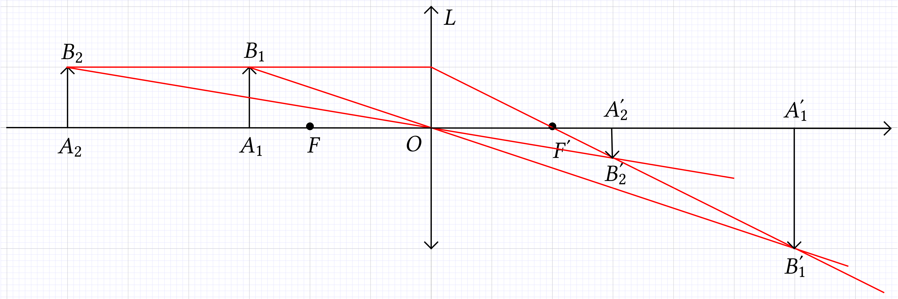
Si l'objet se rapproche du foyer objet de la
lentille, l'image  s'éloigne de cette
lentille.
s'éloigne de cette
lentille.
Le déplacement de l'objectif permet d'augmenter de au maximum la distance entre la lentille et la pellicule par rapport à sa position quand l'objet est « à l'infini ».
Si on note la distance maximale centre
optique de la lentille - écran, on a  . La relation de conjugaison donne alors
. La relation de conjugaison donne alors
A.N. . On peut donc prendre en photo des objets situés entre et .
 dans ces conditions.
dans ces conditions.
Par définition,
Dans le cas des lentilles minces convergentes, on peut montrer que cette définition entraîne
A.N. . L'image est donc bien réelle, renversée et 10 fois plus petite que l'objet.
On veut photographier une carte postale de format .
Les dimensions de la carte postale seraient de .
On veut que les dimensions de l'image de la carte postale soient .
souhaité.
et . Il faut donc multiplier par 0,24 les dimensions de la carte postale pour obtenir celles de l'image. Le grandissement attendu vaut donc .
Le problème admet deux inconnues : et . Il faut donc résoudre le système
Par substitution, on obtient
et
A.N. et . Il n'est manifestement pas possible d'obtenir ce grandissement pour la carte postale envisagée puisque la distance lentille-écran nécessaire est supérieure à celle que l'on peut régler.
laquelle ou lesquelles choisir ;
comment procéder pour que l'image de la carte postale soit nette sur la pellicule avec pour grandissement .
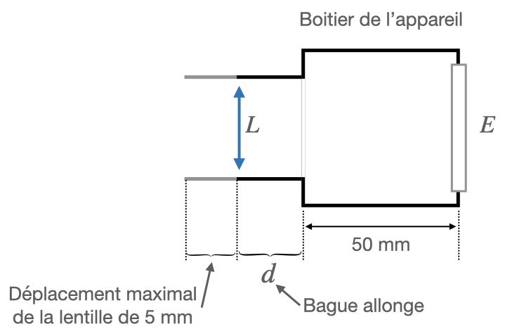
La bague de 5 mm permet de former des images à une distance telle que . Elle est donc trop courte.
La bague de 10 mm permet de former des images à une distance telle que . Elle convient donc.
La bague de 20 mm permet de former des images à une distance telle que . Elle est donc trop longue.
Vue les valeurs des distances, on peut écrire
donc
A.N. .
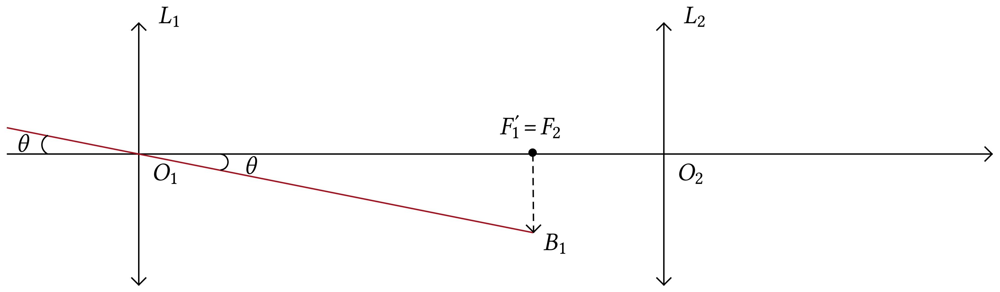
On constate sur le schéma que l'angle sous l'angle on voit la Lune est aussi l'angle sous lequel on voit l'image depuis . On a donc
A.N. .
La vergence de l'objectif vaut donc .
Puisque la lunette est afocale (elle forme une image à
l'infini d'un objet à l'infini), l'image intermédiaire
se trouve dans le plan focal image de et dans le plan focal objet de . Ceci impose que , le foyer image de , soit confondu avec le
foyer objet de .
On
a donc
A.N. . La distance vaut .
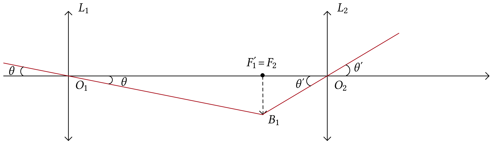
L'angle sous lequel on voit la Lune à travers la lunette est . On constante que c'est aussi l'angle sous lequel on voit l'objet depuis . On a donc
A.N.
Remarque. .
Par définition le grossissement a pour expression,
A.N. . La lunette grossit pratiquement 7 fois.
Remarque. Dans le cours on a montré que
A.N. . On retrouve bien la même valeur.
En 1611, KEPLER propose le principe de la lunette astronomique, avec des lentilles convergentes pour l'oculaire et l'objectif. Il améliore la lunette de GALILÉE, mais l'image est renversée. KEPLER ne mettra cependant pas son idée en pratique ; il faudra attendre 1617 pour voir apparaître les premières lunettes astronomiques.
On se propose de modéliser une lunette astronomique à l'aide de deux lentilles convergentes :
une lentille de distance focale ;
une lentille de distance focale .
A.N. .
La relation de conjugaison appliquée à la lentille donne
pour un objet présent n'importe
où sur l'axe. On a donc
| (1) |
De plus, par définition, le grandissement a pour expression
ou, dans le cas des lentilles minces convergentes,
 |
(2) |
En combinant (1) et (2), on peut écrire
| (3) |
Pour l'objet ,  et .
L'image se trouve à 15 cm après la lentille (elle
est réelle), est renversée et deux fois plus
petite que l'objet.
et .
L'image se trouve à 15 cm après la lentille (elle
est réelle), est renversée et deux fois plus
petite que l'objet.
Pour l'objet , l'image est rejetée à l'infini puisque l'objet est dans le plan focal objet de la lentille.
Pour l'objet , et . L'image se trouve à 10 cm en amont de la lentille (elle est virtuelle), est droite et deux fois plus grande que l'objet.
On reprend la lentille à laquelle on associe la lentille , placée devant , pour simuler sur le banc d'optique une lunette astronomique utilisée pour observer un objet . On se place dans le cas où l'image intermédiaire est située dans le plan focal objet de la lentille .
La distance entre les centres optiques des deux lentilles est fixée à .
joue le rôle d'objet pour la lentille .
- est l'objectif ;
- est l'oculaire.
la lentille et son centre optique ;
les foyers des deux lentilles et ;
l'image intermédiaire de hauteur ;
le tracé de deux rayons lumineux traversant les deux lentilles du système optique en passant par .
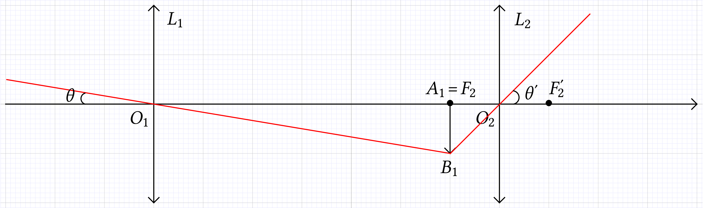
se trouve dans le plan focal image de l'objectif, l'objet se situe donc à l'infini.
se trouve dans le plan focal objet de l'oculaire, l'image se situe donc à l'infini.
Le diamètre apparent de est l'angle sous lequel on voit à l'œil nu ;
Le diamètre apparent de est l'angle sous lequel on voit à l'œil nu. C'est aussi l'angle sous lequel on voit à travers la lunette.
Cf. le graphique.
or et , donc
A.N. .
Pour augmenter le grossissement, il faut diminuer la distance focale de l'oculaire ou/et augmenter la distance focale de l'objectif.
Une lunette est constituée de deux lentilles minces : l'objectif de distance focale et l'oculaire de distance focale .
Avec cette lunette on observe un objet
placé à de l'objectif ; est perpendiculaire à l'axe de la lunette et est situé sur l'axe optique. L'œil est
placé au foyer image de l'oculaire.
Si l'œil n'accomode pas, cela signifie que l'image de donnée par l'oculaire est à l'infini. Cet objet est donc situé dans le plan focal objet de l'oculaire.
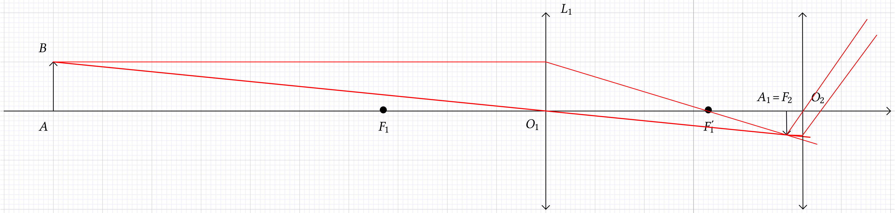
Or
donc
Finalement
A.N. .
La distance entre les lentilles, calculée précédemment, est maintenue constante.
L'œil placé en accommode maintenant au maximum et l'image définitive se forme à de l'œil :
Dans ces conditions, on désire calculer la distance dont il faut déplacer l'objet , sans bouger la lunette.
La relation de conjugaison appliquée à l'oculaire donne
donc
Comme
alors
et
A.N. . L'objet est pratiquement dans le plan focal objet de l'oculaire, ce qui est normal car ; l'image est très loin (pas à l'infini mais pas loin).
A.N. .
Remarque. Il est nécessaire ici de conserver tous les chiffres significatifs sur son brouillon car sinon le calcul final ne sera pas possible.
La relation de conjugaison appliquée à l'objectif donne
soit
A.N. .
Il a fallu rapprocher l'objet de la lentille d'une distance égale à 0,2 cm.